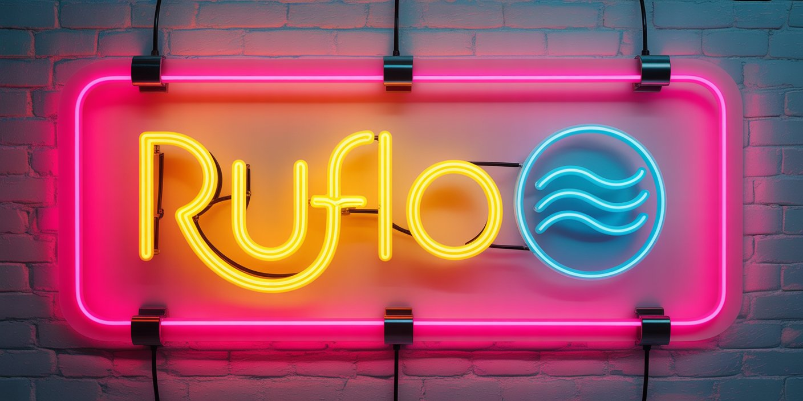

Multi-agent AI harness for Claude Code and Codex，适合部署智能体群、协调自治工作流、构建对话式 AI 系统。
支持 Claude Code 插件路径，也支持 CLI 安装路径；README 明确区分 lite 与 full loop。
swarm、workflows、goals、autopilot、loop-workers。
agentdb、rag-memory、rvf、knowledge graph、ruvector。
testgen、browser、jujutsu、docs、安全审计与 observability。
README 直接给出 34 个插件、98 agents、60+ commands、30 skills 等规模信号。
lite 版和 full loop 分离，降低入门门槛，也方便逐步扩展。
从 init 到 swarm、memory、federation、observability，覆盖完整协作链路。
强调 trust boundaries 和 federated comms，适合多机器协作场景。
| 维度 | 判断 | 备注 |
|---|---|---|
| 定位 | Agent meta-harness | 不是单一插件 |
| 语言 | TypeScript | 主语言公开可见 |
| 协议 | MIT | 许可相对宽松 |
| 规模 | 大规模插件生态 | 要区分 lite 与 full loop |